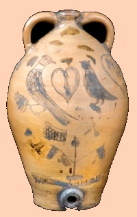

Paul Cushman
Perhaps Paul Cushman was born about 1767. He is thought to have have been born in Charlestown, New Hampshire and raised on a farm in Vermont. He does not seem to have received training as a potter before arriving in Albany within a few years of 1800. Perhaps he started out as a laborer on the Albany waterfront.
He is said to have married Margaret Mc Donald in 1802. The marriage produced a number of children.
 In 1805, he is said to have purchased the stoneware operation begun by William Capron (the younger). By 1809, Paul Cushman was running a stoneware factory "one half mile west of the Albany Gaol."
In 1810, his Albany household was first configured on the city census. In that year, his family included four children aged ten and younger.
Beginning with the first edition in 1813, the address of "Paul Cushman, Potter," on upper Lion then Washington Streets was a fixture in Albany city directories.
In September 1824, a State Supreme Court awarded innkeeper Samuel Bromley a judgment of $600 from his previous loan to Cushman.
Paul Cushman died in March 1833. His age at death was given in the newspaper obituary was seventy-eight. However, we believe he was born in 1767. His will passed probate in July.
Paul Cushman perhaps was early Albany's premier pottery merchant. He was "first and foremost a pottery owner." Whether he actually made any of "his" stone pieces is open to question. Well-known in his day and having left a substantial material legacy, his wares and career are the subjects of a collection of essays published in 2007.
Paul Cushman: The Work and World of an Early 19th Century Albany Potter, by Leigh Keno, Leslie Keno, W Douglas McCombs, Paul Huey, William C Ketchum, Paul Cushman, J r., Christopher V. Mailman, and Warren F. Broderick, Albany Institute of History and Art - 2007 - 142 pages. Catalog of the exhibition held January 20th-May 27, 2007.